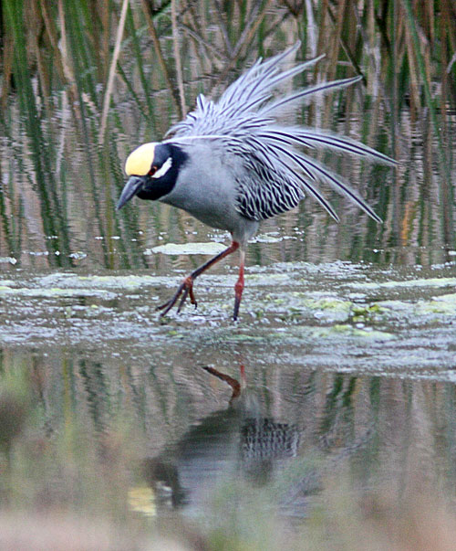

| These photographs accompany records that have been recently submitted to the committee. This record
has been ACCEPTED.  Yellow-crowned Night-Heron Nyctanassa violacea 16 May 2009, Famosa Slough, San Diego, SD 2009-085 © 2009 Jim Pea Back to CBRC Rare Bird Photos |